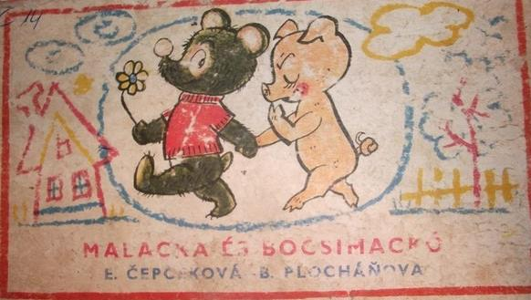

Planet Wars Post-Mortem
Tags: ai, lisp, Date: 2010-12-01
I can't believe I won.
I can't believe I won decisively at all.
The lead in the last month or so was an indicator of having good chances, but there was a huge shuffling of ranks in the last week and some last minute casualties.
Code
Note that the git repository is available at [https://github.com/melisgl/planet-wars(https://github.com/melisgl/planet-wars).
Denial
I had promised myself not to enter this one and resisted for about two weeks when my defenses were worn away and I was drawn into the fray.
The game didn't look very exciting at first. I thought that the bots would soon reach a point of near perfect tactics and the rock-paper-scissors scenarios would dominate (more on this later).
That's enough of tribute, let's steer off the trodden path.
Beginning
Driven by the first virtue of programmers I was going to approach the game in a non-labor-intensive fashion leaving most of the hard work to the machine. The second virtue was kept in check for a week while I was working out how to do that exactly. In the meantime, the third spurred me to take aerique's starter pack and to make myself comfortable with minor modifications to it.
As with tron, UCT was on my mind. However, I was keenly aware of failing to make it work acceptably last time. No matter how cool UCT was, it was hard to miss one important similarity to tron: the fitness function is very jagged, one ship more or less can make all the difference. Clearly, a naive random policy was not going to cut it.
Another problem was the practically unlimited branching factor. Without a similarity function over moves, it was hopeless to explore a meaningful portion of the game tree.
Move Generation
At this point I had to start getting my hands dirty. The first thing
was to implement simulating the future (see FUTURE class), which
was trivial except I screwed battle resolution up and for the
longest time it was holding results back. Think of a future as a
vector of owner and ship count over turns.
By watching some games, it became apparent that multi-planet, synchronized attacks are the way to go. The implementation operates on step targets, steps and moves.
A step is a set of orders from the same player targeting the same planet. The constituent orders need not be for the same turn, neither do they need to arrive on the same turn.
A move is a set of orders from the same player without any restriction. That includes future orders too.
Move generation first computes so called step targets. A step target is a ship count vector over turns representing the desired arrivals. The desired arrivals are simply minimal reinforcements for defense and invasion forces for attack.
For each step target a number of steps can be found that produce the desired arrivals. In the current implementation, there is a single step generated for a step target.
For a while my bot could only make moves that consisted of a single step, but it quickly became the limiting factor, and strength testing of modifications was impossible.
Combining steps into moves turned out to be easy. Not all combinations are valid, but the number of combinations can be huge. To limit the number of moves generated, we first evaluate steps one by one, sort them in descending order of evaluation score and try to combine them starting from the first.
Full Attack
Normally, futures are calculated taking into account fleets already
in flight in the observable game state that the engine sends. Back
when I was still walking up and down instead of typing away
furiously, it occurred to me that if for all planets of player 1,
player 2 cannot take that planet if both players sent all ships to
it, then player 2 cannot take any planet of player 1 even if he's
allowed to attack multiple planets in any pattern. Clearly, this
breaks down at the edges (simultaneous moves), but it was a useful
idea that gave birth to the FULL-ATTACK-FUTURE class. The
intention was to base position evaluation on the sum of scores of
individual full attack futures (one per planet).
Now the problem with full attack future is that sending all
available ships away from a planet can invalidate some orders
scheduled from that planet for the future. Enter the concept (and
class) of SURPLUS.
The surplus of player P at planet A at time t is the number of ships that can be sent away on that turn from the defending army without:
making any scheduled order from planet A invalid
causing the planet to be lost anytime after that (observing only the fleets already in space)
bringing an imminent loss closer in time
As soon as the full attack based position evaluation function was operational, results started to come. But there was a crucial off-by-one bug.
Constraining Futures
That bug was in the scoring of futures. For player 1, it used the possible arrivals (number of ships) one turn before those of player 2. I made several attempts at fixing it, but each time playing strength dropped like a stone.
Finally, a principled solution emerged: when computing the full
attack future from the surpluses, constrain the turn of departures.
That is, to roughly duplicate the effect of the off-by-one bug, one
could say that surpluses of player 1 may not leave the planet before
turn 1 (turn 0 is current game state) (see MIN-TURN-TO-DEPART-1 in
the code). This provided a knob to play with. Using 1 for
MIN-TURN-TO-DEPART-1 made the bot actually prefer moves to just
sitting idly, using 2 made it prefer moves that needed no
reinforcement on the next turn.
I believe the following is the most important one character change I
made, so this gets its own paragraph. Using 2 as
MIN-TURN-TO-DEPART-1 makes the bot tend towards situations in
which the rock-paper-scissors nature of the game is suppressed. The
same bot with 1 beats the one with 2, but as was often the case, on
TCP the results were just the opposite. By a big margin. TCP is
dhartmei's unofficial server, where most useful testing took place.
Constraints were added for arrivals too (see MIN-TURN-TO-ARRIVE),
which eased scoring planets that started out neutral but were
non-neutral at the horizon by making the evaluation function sniping
aware.
Sniping is when one player takes a neutral, losing ships in the process, and the opponent comes – typically on the next turn – and takes it away. This game is a nice illustration of the concept.
Redistribution
As pointed out by iouri in his post-mortem, redistribution of ships is a major factor. The machinery described so far lends itself to easy implementation of redistribution.
When scoring a full attack future, the scoring function gives a very slight positional penalty every simulated turn for every enemy ship. This has the effect of preferring positions where the friendly ships are near the enemy, and positions of influence with multiple enemy planets being threatened.
The move generator was modified to generate steps to each friendly planet from each friendly planet on turn 0 sending all the surplus at that turn. This scheme is rather restrictive, the more flexible solutions had mixed results.
There is a knob, of course, to control how aggressively ships are
redistributed. It's called POSITIONAL-MIN-TURN-TO-DEPART-1. As its
name implies it's like MIN-TURN-TO-DEPART-1 but used only when
computing the positional penalty.
Dynamic Horizon
How far ahead the bot looks has a very strong effect on its play: too far and it will be blind to tactics, too close and it will miss capturing higher cost neutrals.
Horizon was constant 30 for quite some time. I wanted to raise it but couldn't without seriously hurting close range fighting ability. After much experimentation with a slightly complicated mechanism the horizon was set so that the three earliest breakeven turns of safe to take neutrals are included. A neutral is deemed safe to take if from the initial investment until the breakeven point no friendly planet can be possibly lost in a full attack future.
Nash Equilibrium
There are – especially at the very beginning of games – situations where there is no best move, it all depends on what the opponent plays on the same turn.
If one has a number of candidate moves for each player and the score for any pair of them, the optimal mixed strategy can be computed, which is just a probability assigned to each move.
I tried and tried to make it work, but it kept making mistakes that looked easy to exploit, and although it did beat 1 ply minimax about 2 to 1 it was too slow to experiment with.
Alpha–Beta
Yes, for the longest time, it was a 1-ply search. Opponent moves were never considered, and position evaluation was good enough to pick up the slack.
However, there was a problem. The evaluation function did not score planets that were neutral at the end of the normal future, because doing so made the bot just sit there doing nothing, getting high scores for all planets that could be conquered, but when it tried to make a move it realized that it can conquer only one. Such is the nature of full attack based evaluation function, it was designed with complete disregard for neutrals.
A late change to the map generator increased the number of planets at an equal distance from the players and emphasized the rock-paper-scissors nature further. Some bots didn't like it, some took this turn of events better. Before this point, my bot had a very comfortable lead on the official leaderboard, which was greatly reduced.
With the failure of the Nash experiment, I resurrected previously unsuccessful alpha–beta code in hopes of that considering opponent moves will show the bot the error of it ways, and force it to not leave valuable central planets uncovered.
It's tricky to make alpha–beta work with moves that consist of orders at arbitrary times in the future. I had all kinds of funky, correct and less correct ways to execute orders at different depths of the search. In the end, what prevailed was the most simple-minded, incorrect variant that simply scheduled all orders that made up the move (yes, even the future ones) and fixed things up when computing the future so that ship counts stayed non-negative and sending enemy ships did not occur.
In local tests against older versions of my bot, a two ply alpha–beta bot showed very promising results, but when it was tested on tcp it fell way short of the expectations and performed worse than the one ply bot. It seemed particularly vulnerable to a number of bots. In retrospect, I think this was because their move generator was sufficiently different that my bot was just blind to a good range of real possibilities.
In the end, I settled for using four ply alpha–beta for the opening phase (until the third planet was captured). This allowed the bot to outwait opponents when needed and win most openings. After the final submission, I realized that maybe I was trying to push things the wrong way and even three planets is too many. With six hours left until the deadline, in a test against binaries of a few fellow competitors the two planet limit seemed to perform markedly better, but it was too late to properly test it against a bigger population.
The End
Like many fellow contestants, I am very happy that the contest is over and I got my life back. I'm sure that many families breathed a collective sigh of relief. But if I were to continue, I'd try rethinking the move generator because that may just be the thing that holds alpha–beta back and maybe Nash too.
Dissapointingly, there was no learning, adapting to opponent behaviour, etc. All that made it to the todo list but had to take second seat to more pressing concerns.
Ah, yes. One more thing. Bocsimackó (pronounced roughly as bo-chee-mats-ko), after whom the bot was named, is the handsome hero of a children's book, pictured on the left:
